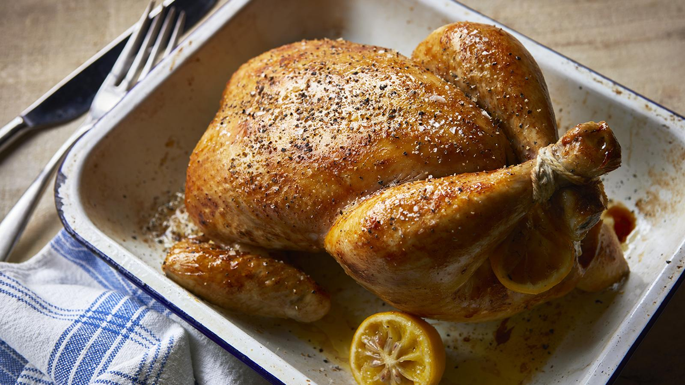

Roast Chicken
Home

Description
Roast chicken is the ultimate crowd pleaser and always welcome whatever the weather. Serve with a green salad and some crusty bread in summer or as a roast dinner for winter. Use our roasting calculator to work out the exact times and temperatures for your roast.
Ingredients
- 1 lemon and/or a small onion (see recipe tips)
- 1 x 1.5kg/3lb 5oz ready-to-cook chicken
- 1 tbsp olive oil or softened butter
- salt and freshly ground back pepper, to taste
Method
- Preheat the oven to 200C/180C Fan/Gas 6.
- Generously season the chicken inside and out with salt and black pepper.
- Slice the lemon in half. If using onion, peel and cut in half. Put the lemon and/or onion inside the cavity of the chicken.
- Put the chicken in a roasting tray and rub the oil or soft butter all over the skin.
- Carve the chicken and serve hot or cold. If making as part of a roast, see the recipe tips (below) for how to make chicken gravy.